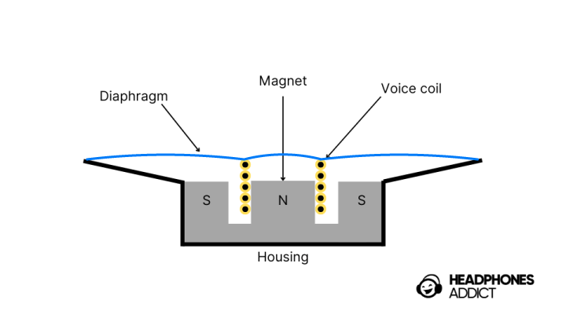

Sekret tkwi w głośnikach Najważniejszą częścią słuchawek są głośniki, a każdy głośnik składa się z trzech głównych elementów. Są to cewka drgająca, magnes stały i membrana. Cewka drgająca to cienki okrąg z drutu miedzianego. Drut ten jest zawieszony w środku magnesu stałego, który utrzymuje stałe pole magnetyczne. Pole to wspomaga drgania cewki. Z cewką połączona jest cienka błona zwana membraną. Membrana ta, znana również jako stożek głośnika, jest częścią odpowiedzialną za wypieranie powietrza. W jaki sposób słuchawki wytwarzają dźwięk? Większość dźwięku, który słyszymy dzisiaj, zaczyna się jako informacja cyfrowa, która przechodzi przez przetwornik cyfrowo-analogowy (DAC). Przetwornik ten przekształca sygnał cyfrowy w analogowy prąd elektryczny, który głośniki mogą wykorzystać do odtwarzania dźwięku. W przypadku urządzeń stworzonych przed erą cyfrową te sygnały elektryczne pochodziły bezpośrednio z analogowego źródła i przechodziły przez wzmacniacz do głośnika — bez konieczności konwersji cyfrowej. W słuchawkach, tak jak we wszystkich głośnikach, oscylujące prądy elektryczne przemieszczają się przez przewody do cewki. Kiedy prąd przepływa przez cewkę, wytwarza pole elektryczne, które oddziałuje z polem elektromagnetycznym magnesu stałego. Różnica pomiędzy tymi dwoma polami powoduje, że cewka drga. Gdy cewka drga, membrana porusza się wraz z nią. Ten ruch membrany powoduje powstawanie fal ciśnienia (lub fal dźwiękowych) w otaczającym ją powietrzu. Te fale to właśnie dźwięk, który słyszysz. W przypadku dźwięków o wyższych tonach membrana porusza się szybko; w przypadku dźwięków o niższych tonach membrana wibruje powoli. Ogólna głośność dźwięku zależy od względnej siły sygnału elektrycznego. Czym różnią się słuchawki przewodowe od bezprzewodowych? Obecnie istnieją tylko dwa główne typy słuchawek: przewodowe, które wykorzystują tradycyjny kabel do połączenia ze źródłem dźwięku, oraz bezprzewodowe, które wykorzystują sygnały bezprzewodowe do odtwarzania dźwięku. Istnieją jednak inne różnice, które należy rozważyć przed wyborem idealnej pary. Główne różnice: Słuchawki przewodowe łączą się z urządzeniem za pomocą kabla (najczęściej jack 3,5 mm lub USB-C). Dzięki temu oferują zazwyczaj wyższą jakość dźwięku, ponieważ sygnał jest przesyłany bez strat i kompresji. Nie mają też opóźnień, co jest szczególnie ważne podczas grania w gry, oglądania filmów czy nagrywania muzyki. Dodatkowo nie wymagają ładowania – działają zawsze, gdy są podłączone.Słuchawki bezprzewodowe (Bluetooth) dają największą swobodę ruchu. Nie plączą się kable, dlatego są idealne do sportu, biegania, spacerów i codziennego użytku w domu. Nowoczesne modele oferują bardzo dobrą jakość dźwięku, aktywną redukcję hałasu (ANC) oraz wiele udogodnień, takich jak sterowanie dotykowe czy długą żywotność baterii. Minusem jest jednak konieczność regularnego ładowania oraz potencjalne niewielkie opóźnienia dźwięku.Podsumowanie – które wybrać?Jeśli zależy Ci na najlepszej możliwej jakości dźwięku, zerowym opóźnieniu i braku problemów z baterią – wybierz słuchawki przewodowe. Jeśli priorytetem jest wygoda i swoboda – lepszym rozwiązaniem będą słuchawki bezprzewodowe.Jeżeli chcesz mieć najlępszą jakość dźwięku za cene, lub jeżeli jesteś na ścisłym budżecie, wybierz przewodowe Obecnie różnica w jakości dźwięku między najlepszymi modelami przewodowymi i bezprzewodowymi jest już dość mała, ale nadal zauważalna dla wymagających użytkowników. Ostateczny wybór zależy głównie od tego, w jakich sytuacjach najczęściej słuchasz muzyki. Jeżeli ciekawią ciebie różne typy głośników i chcesz wiedzieć jak są zbudowane, to możemy ci pomóc przez naciśnięcie tego tekstu